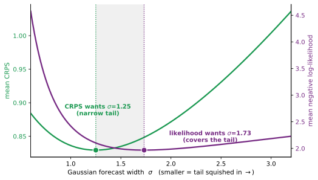

← Papers · pdf · markdown source
Likelihood versus CRPS: A New Perspective
Composition, chained elicitation, and the score under which density refinements add up
Peter Cotton · Working draft v0.1 · 2026
Abstract
The choice between the logarithmic score and the continuous ranked probability score (CRPS) is usually argued on four grounds: locality, propriety, robustness, and interpretability. This note adds a fifth, one the debate rarely weighs. When the elicited object is a reusable predictive density and forecasts are chained, each stage refining the residual left by the last, the logarithmic score is the natural default. The log-likelihood of a composed forecast is the base score plus the log-density of each residual refinement, so credit is additive and each stage's increment is itself the proper score of what that stage added. This is the prequential and logarithmic-market-scoring structure; CRPS shares no comparable per-stage identity. None of that is new mathematics: the decomposition is the probability integral transform and the prequential chain rule. The contribution is a framing. It makes composability the organizing axis of the log-versus-CRPS choice, which is conventionally settled on locality, propriety, robustness, and interpretability, and ties it to chained elicitation, the setting a prediction supply chain lives in. We give the compositional accounting, a population-level worked example in which the two scores prefer measurably different forecasts, and an honest account of where CRPS is the right target, its tail-insensitivity there often a virtue. Conformal prediction appears as the limiting case: a method that need not produce a density at all, scored on the one metric that does not notice.
1. The debate and the axis it usually turns on
A scoring rule is a settlement rule. It fixes what a forecaster is paid to produce, and forecast evaluation is coherent only when the score is matched to the object being forecast (Gneiting 2011; Gneiting & Raftery 2007). For a full predictive distribution the two standard proper scores are the logarithmic score (Good 1952), which reads the density at the realized outcome, and CRPS (Matheson & Winkler 1976), which integrates squared distribution-function error across the line. Both are proper, so in expectation each is optimized by the truth; the argument between them is about which imperfect forecasts they reward.
That argument is usually conducted on four axes. Locality: the log score depends only on the density assigned to what happened, and among scores with that property it is essentially unique up to affine transformation (Bernardo 1979), though broader derivative-local scores exist once the restriction is relaxed (Parry et al. 2012). Propriety: both qualify, so this settles nothing between them. Robustness: the log score is unbounded below and CRPS is not, which is read for and against depending on whether an extreme outcome signals a fixable model or an unmodelable tail (Machete 2013; Bolin & Wallin 2023). Interpretability: CRPS lives in the units of the outcome and the log score in nats. Reviews weigh these and reasonably conclude that the right score depends on the use (Gneiting & Raftery 2007; Dawid & Musio 2014).
This note presses a fifth consideration, absent from that list. It concerns not a single forecast but a chain of them, and it is decisive precisely when distributional prediction is organized as a supply chain (Cotton 2019; Cotton 2022).
2. Composition: the score under which refinements add up
Take a base forecast with density $p_1$ and distribution function $F_1$. A second stage forecasts the residualized variable $$z = \Phi^{-1}\!\big(F_1(y)\big),$$ the base forecast's own probability integral transform pushed to the Gaussian scale (Rosenblatt 1952; Diebold et al. 1998). If the second stage assigns density $g$ to $z$, the change of variables $dz/dy = p_1(y)/\varphi(z)$ gives the composed density $p(y) = p_1(y)\,g(z)/\varphi(z)$, so $$\log p(y) \;=\; \log p_1(y) \;+\; \big(\log g(z) - \log\varphi(z)\big).$$ The log score of the composed forecast is the base score plus the incremental score of the refinement. A stage that reports the crowd's own residual law, $g=\varphi$, adds nothing and is paid nothing; a stage that finds structure the base missed is paid exactly its contribution. Credit is additive, and skill is attributable stage by stage. This is the accounting a prediction supply chain needs, and it is developed for chained pools and stacked lotteries in (Cotton 2026; Cotton 2020) under the algebra of (Cotton 2026). The dependence case factors the same way: by Sklar's theorem (Sklar 1959) a joint log-density splits into marginal terms plus a copula term, one stage each.
What makes this matter for the choice of score is not that the log-likelihood telescopes, which any additive bookkeeping of any score's differences would. It is that each increment $\log g(z)-\log\varphi(z)$ is itself the logarithmic score of the stage's residual refinement, strictly proper for the law of $z$: the stage is paid exactly, and only, for the density it added. The market form is Hanson's logarithmic market scoring rule, in which a trader who moves the report from $p$ to $p'$ is paid $S(p',y)-S(p,y)$, a chain of them telescopes to $S(p_{\text{final}},y)-S(p_0,y)$, and the logarithmic rule is singled out because it alone yields a path-independent, additive cost function (Hanson 2007). Composability under chaining is, in that setting, a defining property of the log score, not a new observation.
Three further constructions are the same identity. A residual chain is gradient boosting under log loss: each stage multiplies the running density by a likelihood ratio fitted to what the chain so far gets wrong, the greedy stagewise step of boosting (Mason et al. 1999; Friedman 2001) applied to density estimation with the log-likelihood as the loss (Rosset & Segal 2002), with participants in place of weak learners and staked wealth in place of the learning rate. Sequential prediction scored by cumulative log loss is the prequential view (Dawid 1984), under which a probability model and a sequential code are the same object, the connection minimum description length makes exact (Grünwald & Roos 2019). And an autoregressive or normalizing-flow model is already such a chain, its log-likelihood a sum of a base log-density and per-stage change-of-variables terms (Papamakarios et al. 2021).
CRPS has no matching per-stage identity. Its values along a chain telescope, as any score's differences do, but the increment is not the CRPS of the stage's residual refinement, and there is no path-independent cost of which the chain is the sum. This is distinct from the reliability–resolution decomposition of a single CRPS value (Hersbach 2000), which splits one score into calibration components rather than a chain into per-stage credit. The point is not that CRPS is improper or uninformative, only that it is not the accounting system a chain runs on.
3. Two geometries of error
The two scores measure different things, and the cleanest way to see it is through their regret against the truth $p$ under a forecast $q$: $$\text{log-score regret} = D_{\mathrm{KL}}(p \,\|\, q), \qquad \text{CRPS regret} = \int_{-\infty}^{\infty}\!\big(F_q(t) - F_p(t)\big)^2\,dt.$$ Both are Bregman divergences of the respective proper score (Gneiting & Raftery 2007). The log score penalizes relative density error where the truth puts its mass; CRPS penalizes integrated distribution-function error across thresholds. The first is the divergence a likelihood ratio, a Bayesian update, or a growth-optimal bet consumes; the value a conditioning forecaster extracts over a crowd that ignores a covariate is exactly the mutual information $I(R;X)$ (Cotton 2026). The second is gentler in the tails: a distant outcome costs CRPS on the order of its distance, but costs the log score quadratically, or without bound where the density vanishes.
There is a market reading of the first. In a complete, arbitrage-free market normalized Arrow–Debreu state prices define a risk-neutral state-price density; in an incomplete market there may be many, and none need equal the physical law (Cochrane 2005). Either way prices behave like a density-ratio settlement, not an arbitrary point forecast, and the growth-optimal investor stakes her physical density to maximize expected log wealth (Kelly 1956). A logarithmic market scoring rule is the mechanism that pays exactly this (Hanson 2007). CRPS has no such reading.
The gentleness of CRPS in the tails is not abstract. Let the truth be Student-$t$ with three degrees of freedom, heavy-tailed, and fit a single Gaussian $N(0,\sigma^2)$ to it under each score. Likelihood insists on covering the tail: its optimum is variance-matching, $\sigma=\sqrt{3}\approx1.73$. CRPS prefers a sharper central fit and shrugs off the occasional outlier: its optimum is $\sigma\approx1.25$, a $28\%$ narrower forecast with the tail squished in.

The narrower forecast wins CRPS and loses log-likelihood:
| Gaussian fit to $t_3$ | mean CRPS | mean NLL | |---|---|---| | $\sigma=1.73$, likelihood-optimal | 0.848 | 1.968 | | $\sigma=1.25$, CRPS-optimal | 0.829 | 2.102 |
Two honest qualifications. This does not beat a correct model: CRPS is proper, so at the population level the true $t_3$ scores best on both (CRPS $0.827$, NLL $1.773$), and the trade-off lives only among imperfect forecasts. And it runs the other way when the tail is genuinely unmodelable, where the narrower forecast is the sensible one and CRPS is right to prefer it; that same tail-insensitivity is what the robustness literature counts in CRPS's favor (Bolin & Wallin 2023). The point is only that the two proper scores rank the same imperfect forecasts differently, and that the log score is the one whose ranking a chain can add up.
Conformal prediction is this taken to its limit. A standard split-conformal predictor is not a density forecast at all; it targets finite-sample marginal coverage (Lei et al. 2018). Coerce its calibration residuals into an unsmoothed empirical predictive law and it assigns zero density outside the observed range, hence $-\infty$ log-likelihood on any outcome beyond it, while its CRPS stays finite and competitive. A method that need not produce a density, yet scores well on CRPS, is the metric's tail-insensitivity turned into a feature of the approach, and the conditional information $I(R;X)$ it forfeits is exactly what a log-scored competitor collects against it (Cotton 2026).
4. Where CRPS is the right target
None of this makes CRPS a bad score. It answers a different question, and it is well matched to broad distribution-function accuracy, threshold and quantile behavior, robustness under tails one cannot model, and interpretability in the outcome's own units. When the decision is known and coarse, a threshold, a quantile, an interval, an inventory limit, a smooth payoff integral, the decision-relevant functional should be scored directly, with a threshold- or quantile-weighted rule aimed at the region that matters (Gneiting & Ranjan 2011; Gneiting 2011). CRPS and its relatives are the right tools there, and as a secondary diagnostic CRPS is a useful check that a log-score winner has not won by pathological sharpness (Gneiting et al. 2007). The claim of this note is narrower and, we think, robust: when the elicited object is a reusable density and the future use is unknown, and above all when forecasts are to be chained, the log score is the default because it is the score under which refinements compose.
5. Related work and what is and is not new
Each ingredient is old. The residual identity is the probability integral transform (Rosenblatt 1952) and Sklar's theorem (Sklar 1959); probability-integral-transform diagnostics are standard for density forecasts (Diebold et al. 1998; Gneiting et al. 2007), and the same change-of-variables log-additivity is what autoregressive and normalizing-flow models exploit (Papamakarios et al. 2021). That the log score is additive under sequential prediction is the prequential principle (Dawid 1984) and the compression view of minimum description length (Grünwald & Roos 2019). That it composes under chaining is, in the mechanism-design setting, the defining rationale of Hanson's logarithmic market scoring rule (Hanson 2007), and log-score optimization is likewise the natural objective when predictive densities are stacked (Yao et al. 2018). Residual refinement under log loss is gradient boosting (Mason et al. 1999; Friedman 2001), applied to density estimation in (Rosset & Segal 2002). The conventional log-versus-CRPS axes, locality, propriety, sensitivity, robustness, interpretability, are set out in (Gneiting & Raftery 2007; Machete 2013; Bolin & Wallin 2023), with locality's role for the log score going back to (Bernardo 1979). The convex-duality background is consolidated for these mechanisms in (Cotton 2026).
What is new is not a theorem but a framing, and a modest one. Each fact above lives in a separate literature, market scoring, prequential analysis, boosting, flows, and the log-versus-CRPS evaluation debate has drawn on almost none of them. It is conducted as if the object were a single forecast graded once. Once the object is a reusable density and the process is a chain of elicitations, a consideration those reviews do not weigh becomes the deciding one: only the log score's stage increment is itself the proper score of what the stage added. That is the natural reading of a distributional prediction supply chain (Cotton 2019; Cotton 2022; Cotton 2026), and it recasts conformal prediction, often defended on CRPS and coverage, as the case where the tail-insensitivity of those metrics is doing the defending.
One question the literature appears not to have asked would sharpen any reading of it. Is an author's choice of evaluation metric correlated with the comparative advantage of the method being proposed? If methods tend to be reported on the score they happen to win, the field's stated preferences between log-likelihood and CRPS would partly reflect selection rather than merit. We are not aware of a study measuring this correlation, and it seems worth one.
6. Summary, for now
The right score matches the target. When the target is a threshold, a quantile, an interval, or an action, score it directly, and CRPS or a weighted relative may be the better tool. When the target is a reusable density under unknown later use, and when densities are to be composed, held-out log-likelihood is the default: it is local, its regret is a divergence one can read as information, it is the settlement rule of a density-ratio market, and, the consideration this note adds, it is the score under which refinements add up. CRPS remains a useful secondary diagnostic and a legitimate primary target for coarser questions. It is not wrong. It is a different contract, and it is not the one a chain signs.